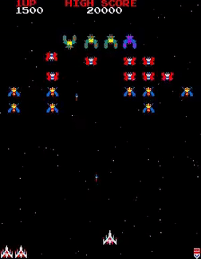

Lab 9

Challenges
For Lab 9, there was not many challenges for this one. Honestly, the only challenge was just experimenting and trying to satisfy my needs for the webpage. Other than that, we've been working with borders, margins, and padding for a while now.
Problems
the only problem I fell into was trying to get my image inside the body border. Trying to figure what div selectors to choose so I can fix the problem
Results
After fixing and fine tuning the website, it came out to be like I thought it would. Which is good because I thought my ideas were not going to be achievable. In the end, it all worked out and I love this webpage the most by far.